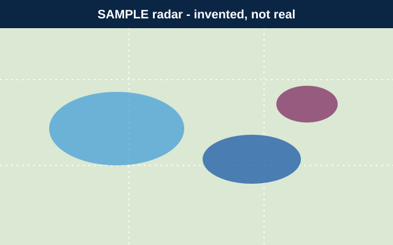

Map Center Sample
Non-functional demo. The images are invented placeholders, not live radar, satellite or observations. The layer and zoom controls only swap local pictures.
Sample map viewer

Legend (sample)
- Light shading: light invented rain
- Dark shading with hatch: heavy invented rain
- Dotted outline: sample county lines